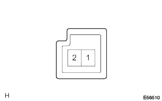
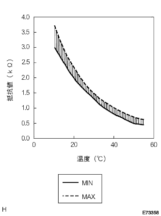

クーラ サーミスタ (ナイキオン センサ) 単体点検 |
| 1. クーラ サーミスタ (ナイキオン センサ)点検 |
内気センサ抵抗値点検
|  |
SST(トヨタエレクトリカルテスター)を使用して、サーミスタASSY(内気センサ)のコネクタ1端子←→2端子間の抵抗値を測定する。
|  |
点検時点のセンサ雰囲気温度と抵抗値を測定し、判定する。
| 温度(°C) | 基準値(KΩ) |
|---|---|
| 10 | 3.00-3.73 |
| 15 | 2.45-2.88 |
| 20 | 1.95-2.30 |
| 25 | 1.60-1.80 |
| 30 | 1.28-1.47 |
| 35 | 1.00-1.22 |
| 40 | 0.80-1.00 |
| 45 | 0.65-0.85 |
| 50 | 0.50-0.70 |
| 55 | 0.44-0.60 |
| 60 | 0.36-0.50 |